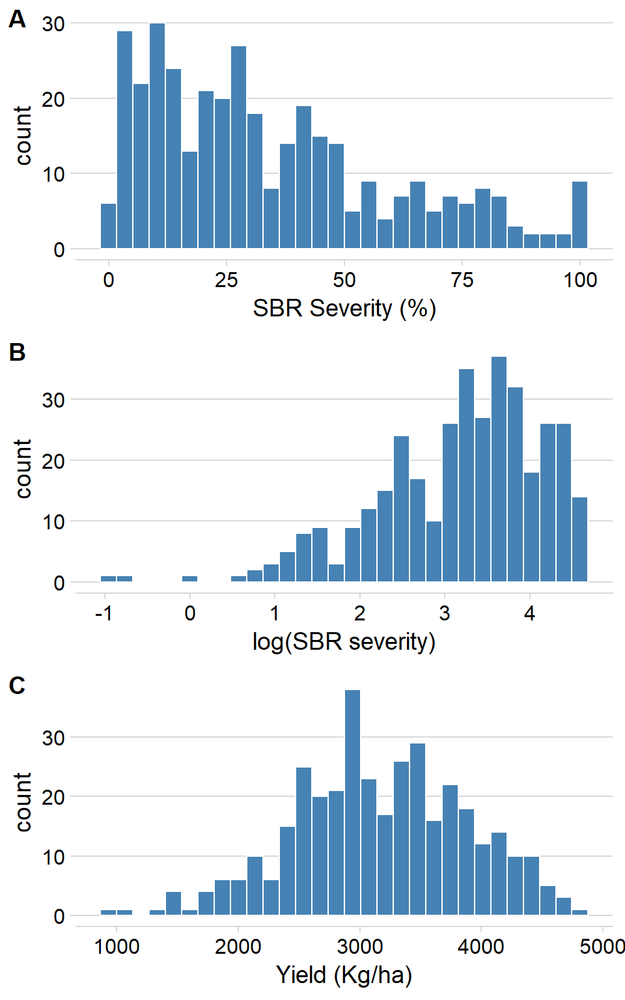
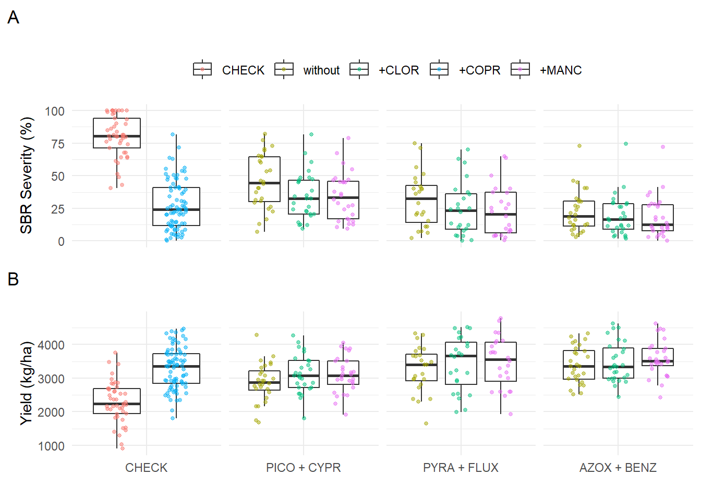
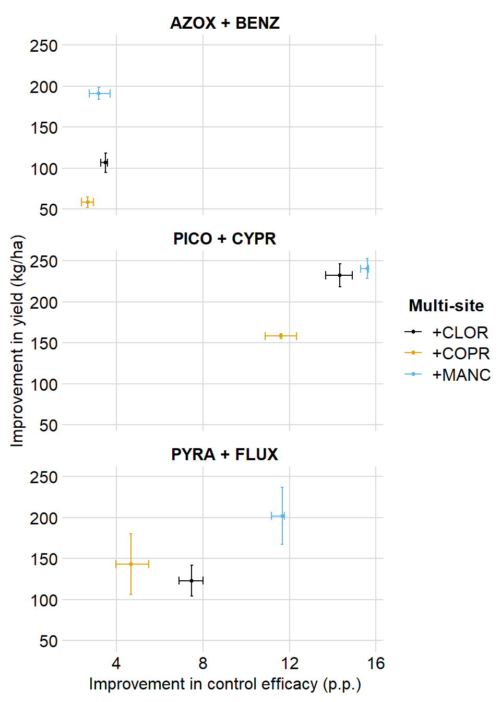
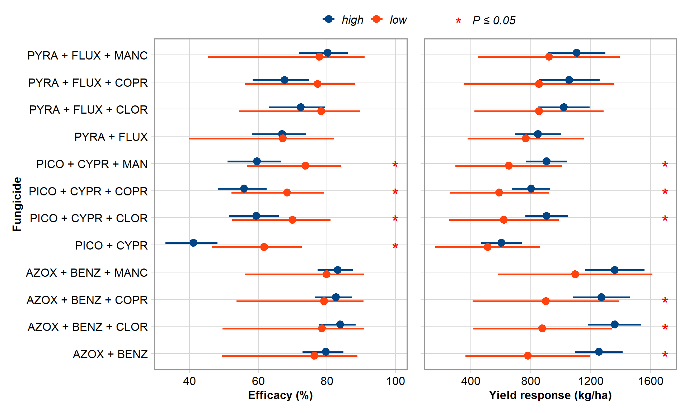
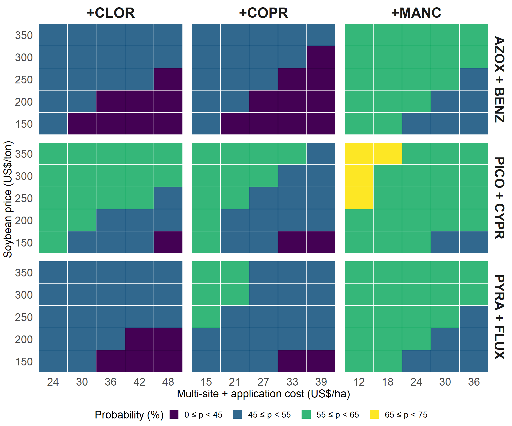
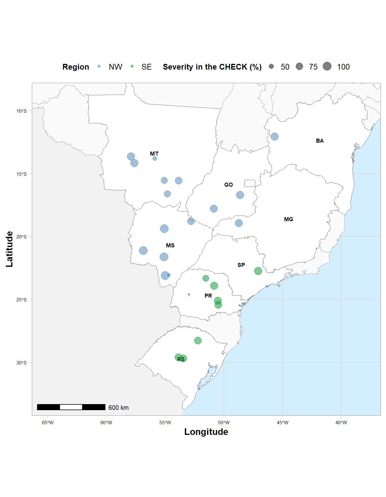
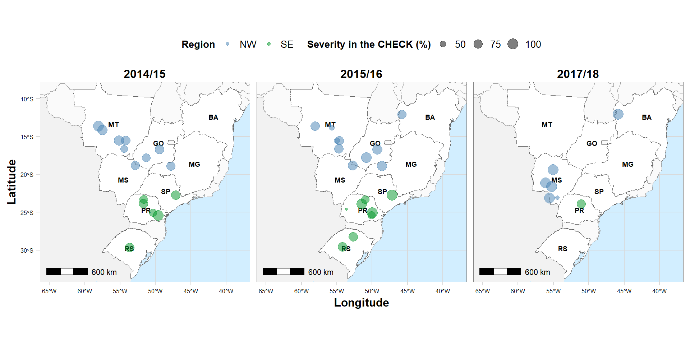

library(tidyverse)
library(readxl)
library(metafor)
library(broom)
library(here)
library(knitr)
library(kableExtra)
library(cowplot)
library(janitor)multi$multi1 <- ifelse(multi$AI == "AACHECK", "AACHECK",
ifelse(multi$AI == "PICO + CYPR + MANC", "+MANC",
ifelse(multi$AI == "PICO + CYPR + COPPER", "+COPR",
ifelse(multi$AI == "PICO + CYPR + CLOR", "+CLOR",
ifelse(multi$AI == "AZOX + BENZ + MANC", "+MANC",
ifelse(multi$AI == "AZOX + BENZ + COPPER", "+COPR",
ifelse(multi$AI == "AZOX + BENZ + CLOR", "+CLOR",
ifelse(multi$AI == "PYRA + FLUX + MANC", "+MANC",
ifelse(multi$AI == "PYRA + FLUX + COPPER", "+COPR",
ifelse(multi$AI == "PYRA + FLUX + CLOR", "+CLOR", "without"))))))))))multi_hist = multi %>%
mutate(log_sev = log(sev_r6))
hist_log_sev <- ggplot(multi_hist, aes(log_sev)) +
geom_histogram(bin = 10, fill = "steelblue", color = "white") +
theme_minimal_hgrid() +
#scale_y_continuous(breaks = c(0, 500, 1000, 1500), limits = c(0, 1500)) +
xlab("log(SBR severity)")
hist_sev <- ggplot(multi_hist, aes(sev_r6)) +
geom_histogram(bin = 10, fill = "steelblue", color = "white") +
theme_minimal_hgrid() +
xlab("SBR Severity (%)")
hist_yld <- ggplot(multi_hist, aes(yield_kg)) +
geom_histogram(bin = 10,fill = "steelblue", color = "white") +
theme_minimal_hgrid() +
xlab("Yield (Kg/ha)")
library(cowplot)
hist_plot <- plot_grid(hist_sev, hist_log_sev, hist_yld, labels = c("A", "B", "C"), nrow = 3, align = "V")## `stat_bin()` using `bins = 30`. Pick better value with `binwidth`.
## `stat_bin()` using `bins = 30`. Pick better value with `binwidth`.
## `stat_bin()` using `bins = 30`. Pick better value with `binwidth`.
multi <- multi %>%
filter(yield_kg != "NA")
multi$fung_name <- ifelse(multi$AI == "PICO + CYPR", "PICO + CYPR",
ifelse(multi$AI == "PICO + CYPR + MANC","PICO + CYPR",
ifelse(multi$AI == "PICO + CYPR + COPR","PICO + CYPR",
ifelse(multi$AI == "PICO + CYPR + CLOR","PICO + CYPR",
ifelse(multi$AI == "AZOX + BENZ", "AZOX + BENZ",
ifelse(multi$AI == "AZOX + BENZ + MANC","AZOX + BENZ",
ifelse(multi$AI == "AZOX + BENZ + COPR","AZOX + BENZ",
ifelse(multi$AI == "AZOX + BENZ + CLOR","AZOX + BENZ",
ifelse(multi$AI == "PYRA + FLUX", "PYRA + FLUX",
ifelse(multi$AI == "PYRA + FLUX + MANC", "PYRA + FLUX",
ifelse(multi$AI == "PYRA + FLUX + COPR","PYRA + FLUX",
ifelse(multi$AI == "PYRA + FLUX + CLOR","PYRA + FLUX",
"AACHECK"))))))))))))
sev_AI_box <- multi %>%
mutate(multi1 = factor(multi1, levels = c("AACHECK", "without", "+CLOR", "+COPR", "+MANC"))) %>%
mutate(fung_name = factor(fung_name, levels = c("AACHECK", "PICO + CYPR", "PYRA + FLUX", "AZOX + BENZ"))) %>%
ggplot(aes(fung_name, sev_r6, fill = multi1))+
geom_boxplot(outlier.colour = NA, position = position_dodge(width = 0.95), aes(fill = multi1))+
geom_jitter(position=position_jitterdodge(dodge.width= 0.95, jitter.width = 0.6), size = 1, alpha=0.5, aes(colour=multi1))+
scale_fill_grey(name = "", start = 1, end = 1, breaks=c("AACHECK", "without", "+CLOR", "+COPR", "+MANC"), labels=c("CHECK", "without", "+CLOR", "+COPR", "+MANC"))+
scale_x_discrete(labels = c("AACHECK" = "CHECK", "PICO + CYPR" = "PICO + CYPR", "PYRA + FLUX" = "PYRA + FLUX", "AZOX + BENZ" = "AZOX + BENZ"))+
scale_color_hue(name="", breaks=c("AACHECK", "without", "+CLOR", "+COPR", "+MANC"), labels=c("CHECK", "without", "+CLOR", "+COPR", "+MANC"))+
facet_grid(~fung_name, scales = "free")+
theme_minimal()+
theme(legend.position = "top",
strip.background = element_blank(), strip.text.x = element_blank(),
axis.text.x=element_blank(),
plot.margin = margin(-0.5, 0, 0, 0, unit = "cm")
)+
labs(title ="", x = "", y = "SBR Severity (%)", fill = " ")+
scale_y_continuous(breaks=c(0, 25, 50, 75, 100))
yield_AI_box <- multi %>%
mutate(multi1 = factor(multi1, levels = c("AACHECK", "without", "+CLOR", "+COPR", "+MANC"))) %>%
mutate(fung_name = factor(fung_name, levels = c("AACHECK", "PICO + CYPR", "PYRA + FLUX", "AZOX + BENZ"))) %>%
ggplot(aes(fung_name, yield_kg))+
geom_boxplot(outlier.colour = NA, position = position_dodge(width = 0.95), aes(fill = multi1))+
geom_jitter(position=position_jitterdodge(dodge.width=0.95, jitter.width = 0.6), size = 1, alpha=0.5, aes(colour=multi1))+
scale_fill_grey(name = "", start = 1, end = 1, breaks=c("AACHECK", "without", "+CLOR", "+COPR", "+MANC"), labels=c("CHECK", "without", "+CLOR", "+COPR", "+MANC"))+
scale_x_discrete(labels = c("AACHECK" = "CHECK", "PICO + CYPR" = "PICO + CYPR", "PYRA + FLUX" = "PYRA + FLUX", "AZOX + BENZ" = "AZOX + BENZ"))+
scale_color_hue(name="", breaks=c("AACHECK", "without", "+CLOR", "+COPR", "+MANC"), labels=c("CHECK", "without", "+CLOR", "+COPR", "+MANC"))+
facet_grid(~fung_name, scales = "free")+
theme_minimal()+
theme(legend.position = "none",
strip.background = element_blank(), strip.text.x = element_blank(),
plot.margin = margin(-0.5, 0, 0, 0, unit = "cm")
)+
labs(title ="", x = "", y = "Yield (kg/ha)", fill = " ")+
scale_y_continuous(breaks=c(0, 1000, 2000, 3000, 4000, 5000, 6000))
library(patchwork)
g1 = sev_AI_box / yield_AI_box + plot_annotation(tag_levels = 'A')
ggsave("figs/box_multi_site.png", width=6, height=5, dpi=800)
g1
library(ggthemes)
yield_gain = read_excel(here("data", "gain_yld.xlsx"))
efficacy_gain = read_excel(here("data", "gain_efficacy.xlsx"))
gain = left_join(yield_gain, efficacy_gain, by= c("fungicide", "multi_site"))
gain = gain %>%
mutate(multi_site = case_when(
multi_site == "CLOR" ~ "+CLOR",
multi_site == "MANC" ~ "+MANC",
multi_site == "COPPER" ~ "+COPR"))
plot_multi_gain <- gain %>%
ggplot(aes(mean_eff, mean)) +
geom_errorbar(aes(ymin = lower, ymax = upper, color = multi_site), width=0.12, size= 0.5)+
geom_errorbarh(aes(xmin = lower_eff, xmax = upper_eff, color = multi_site), height= 10, size= 0.5)+
geom_point(aes(mean_eff, mean, color = multi_site), size = 1)+
#scale_y_continuous(breaks=c(0, 100, 200, 300, 400, 500, 600), limits=c(0,600))+
#scale_x_continuous(breaks=c(0, 5, 10, 15, 20, 25, 30), limits=c(0,30))+
theme_minimal_grid()+
scale_color_colorblind()+
labs(y = "Improvement in yield (kg/ha)", x = "Improvement in control efficacy (p.p.)", color = "Multi-site")+
facet_wrap(~ fungicide, scales = "fixed", nrow=3) +
theme(axis.text=element_text(size=12),
axis.title=element_text(size=12),
strip.text.x = element_text(size = 12, face = "bold"),
strip.text.y = element_text(size = 12, face = "bold"),
legend.position = "right",
legend.title.align = 0.5,
legend.title = element_text(size=12, face = "bold"))
plot_multi_gain
library(cowplot)
library(tidyverse)
library(here)
yld_baseline = read_excel(here("data","yld_baseline_results.xlsx"))
eff_baseline = read_excel(here("data","eff_baseline_results.xlsx"))
eff_baseline = eff_baseline %>%
mutate(sig = case_when(
fungicide == "PICO + CYPR" ~ "sig",
fungicide == "PICO + CYPR + CLOR" ~ "sig",
fungicide == "PICO + CYPR + COPPER" ~ "sig",
fungicide == "PICO + CYPR + MANC" ~ "sig",
fungicide == "PYRA + FLUX" ~ "ns",
fungicide == "PYRA + FLUX + CLOR" ~ "ns",
fungicide == "PYRA + FLUX + COPPER" ~ "ns",
fungicide == "PYRA + FLUX + MANC" ~ "ns",
fungicide == "AZOX + BENZ" ~ "ns",
fungicide == "AZOX + BENZ + CLOR" ~ "ns",
fungicide == "AZOX + BENZ + COPPER" ~ "ns",
fungicide == "AZOX + BENZ + MANC" ~ "ns")) %>%
mutate(fungicide = case_when(
fungicide == "PICO + CYPR" ~ "PICO + CYPR",
fungicide == "PICO + CYPR + CLOR" ~ "PICO + CYPR + CLOR",
fungicide == "PICO + CYPR + COPPER" ~ "PICO + CYPR + COPR",
fungicide == "PICO + CYPR + MANC" ~ "PICO + CYPR + MAN",
fungicide == "PYRA + FLUX" ~ "PYRA + FLUX",
fungicide == "PYRA + FLUX + CLOR" ~ "PYRA + FLUX + CLOR",
fungicide == "PYRA + FLUX + COPPER" ~ "PYRA + FLUX + COPR",
fungicide == "PYRA + FLUX + MANC" ~ "PYRA + FLUX + MANC",
fungicide == "AZOX + BENZ" ~ "AZOX + BENZ",
fungicide == "AZOX + BENZ + CLOR" ~ "AZOX + BENZ + CLOR",
fungicide == "AZOX + BENZ + COPPER" ~ "AZOX + BENZ + COPR",
fungicide == "AZOX + BENZ + MANC" ~ "AZOX + BENZ + MANC"))
graf1 = eff_baseline %>%
mutate(class = factor(class, levels = c("low","high"))) %>%
ggplot(aes(fungicide, mean)) +
geom_errorbar(aes(ymin = lower,ymax = upper, color = class, shape = sig), width = 0, size = 1, position = position_dodge(0.3))+
labs(y = "Efficacy (%)", x = "Fungicide", color = "Disease pressure", shape = "")+
scale_y_continuous(breaks=c(40,60,80,100))+
geom_point(aes(fungicide, mean, color = class), position = position_dodge(0.3), size = 3.5) +
geom_point(aes(x = fungicide, y = 100, shape = sig), size = 6, color = "red")+
theme_minimal_grid()+
theme(axis.text = element_text(size=12),
legend.justification = "center",
axis.title=element_text(size=12, face = "bold"),
legend.position = "top",
panel.border = element_rect(color = "gray60", size=1),
legend.title = element_text(size = 12, face = "bold"),
legend.text = element_text(size = 12, face = "italic"))+
scale_color_manual(values=c("#004586", "#FF420E"),
name = "Disease pressure",
breaks=c("high", "low"),
labels=c("high", "low"))+
scale_shape_manual(values = c(" ","*"),
labels=c("", "P \u2264 0.05"))+
guides(shape = guide_legend("", order = 2),
color = guide_legend("", order = 1)) +
coord_fixed()+
coord_flip()## Warning: Ignoring unknown aesthetics: shape## Coordinate system already present. Adding new coordinate system, which will replace the existing one.yld_baseline = yld_baseline %>%
mutate(sig = case_when(
fungicide == "PICO + CYPR" ~ "ns",
fungicide == "PICO + CYPR + CLOR" ~ "sig",
fungicide == "PICO + CYPR + COPPER" ~ "sig",
fungicide == "PICO + CYPR + MANC" ~ "sig",
fungicide == "PYRA + FLUX" ~ "ns",
fungicide == "PYRA + FLUX + CLOR" ~ "ns",
fungicide == "PYRA + FLUX + COPPER" ~ "ns",
fungicide == "PYRA + FLUX + MANC" ~ "ns",
fungicide == "AZOX + BENZ" ~ "sig",
fungicide == "AZOX + BENZ + CLOR" ~ "sig",
fungicide == "AZOX + BENZ + COPPER" ~ "sig",
fungicide == "AZOX + BENZ + MANC" ~ "ns")) %>%
mutate(fungicide = case_when(
fungicide == "PICO + CYPR" ~ "PICO + CYPR",
fungicide == "PICO + CYPR + CLOR" ~ "PICO + CYPR + CLOR",
fungicide == "PICO + CYPR + COPPER" ~ "PICO + CYPR + COPR",
fungicide == "PICO + CYPR + MANC" ~ "PICO + CYPR + MAN",
fungicide == "PYRA + FLUX" ~ "PYRA + FLUX",
fungicide == "PYRA + FLUX + CLOR" ~ "PYRA + FLUX + CLOR",
fungicide == "PYRA + FLUX + COPPER" ~ "PYRA + FLUX + COPR",
fungicide == "PYRA + FLUX + MANC" ~ "PYRA + FLUX + MANC",
fungicide == "AZOX + BENZ" ~ "AZOX + BENZ",
fungicide == "AZOX + BENZ + CLOR" ~ "AZOX + BENZ + CLOR",
fungicide == "AZOX + BENZ + COPPER" ~ "AZOX + BENZ + COPR",
fungicide == "AZOX + BENZ + MANC" ~ "AZOX + BENZ + MANC"))
graf2 = yld_baseline %>%
mutate(class = factor(class, levels = c("low", "high"))) %>%
ggplot(aes(fungicide, mean)) +
geom_errorbar(aes(ymin = lower,ymax = upper, color = class, shape = sig), width = 0, size = 1, position = position_dodge(0.3))+
labs(y = "Yield response (kg/ha)", x = "Fungicide", color = "Disease pressure", shape = "")+
scale_y_continuous(breaks=c(400,800, 1200,1600))+
geom_point(aes(fungicide, mean, color = class), position = position_dodge(0.3), size = 3.5) +
geom_point(aes(x = fungicide, y = 1700, shape = sig), size = 6, color = "red")+
theme_minimal_grid()+
theme(axis.text.y = element_blank(),
axis.title.y = element_blank(),
axis.title.x = element_text(size = 12, face = "bold"),
legend.justification = "center",
legend.position = "none",
panel.border = element_rect(color = "gray60", size=1),
legend.title = element_text(size = 12, face = "bold"),
legend.text = element_text(size = 12, face = "italic"))+
scale_color_manual(values=c("#004586", "#FF420E"),
name = "Disease pressure",
breaks=c("high", "low"),
labels=c("high", "low"))+
scale_shape_manual(values = c(" ","*"),
labels=c("", "P \u2264 0.05"))+
guides(shape = guide_legend("", order = 2),
color = guide_legend("", order = 1)) +
coord_fixed()+
coord_flip()## Warning: Ignoring unknown aesthetics: shape## Coordinate system already present. Adding new coordinate system, which will replace the existing one.
## Min. 1st Qu. Median Mean 3rd Qu. Max.
## 54.15 60.86 67.28 66.74 72.06 81.88## [1] 222.4531rust <- read_excel(here("data", "economic_analysis.xlsx"), 2)
rust <- rust %>%
mutate(multi = case_when(
multi == "CLOR" ~ "+CLOR",
multi == "MANC" ~ "+MANC",
multi == "COPPER" ~ "+COPR")) %>%
mutate(tau = as.numeric(tau),
D = as.numeric(D))
prob <- function(C, P, tau, D) {
profit <- (D - (C / (P / 1000))) / sqrt(tau) # loss
prob_gain <- pnorm(profit)
prob_gain
}
for (i in 1:length(rust$C)) {
rust$breacking_even[i] <- prob(C = rust$C[i], D = rust$D[i], tau = rust$tau[i], P = rust$P[i]) * 100
}
library(viridis)
library(tidyverse)
library(ggthemes)
dat <- rust %>%
mutate(
breacking_even = as.numeric(breacking_even),
breacking_even = round(breacking_even, 1)
)
dat %>%
mutate(breacking_even1 = case_when(
breacking_even >= 75 ~ "p \u2265 75 ",
breacking_even < 75 & breacking_even >= 65 ~ "65 \u2264 p < 75 ",
breacking_even < 65 & breacking_even >= 55 ~ "55 \u2264 p < 65 ",
breacking_even < 55 & breacking_even >= 45 ~ "45 \u2264 p < 55 ",
breacking_even < 45 ~ "0 \u2264 p < 45 "
)) %>%
mutate(multi = factor(multi, levels = c("+CLOR", "+COPR", "+MANC"))) %>%
ggplot(aes(factor(C), factor(P), z = breacking_even1, fill = breacking_even1, label = breacking_even1)) +
geom_tile(color = "white", size = 0.5) +
scale_fill_viridis(discrete = T, option = "F", begin = 0, end = 1, name = "Probability (%)") +
scale_color_gradient(high = "white", low = "white") +
labs(x = "Multi-site + application cost (US$/ha)", y = "Soybean price (US$/ton) ", fill = "") +
# facet_wrap(~fungicide, ncol = 2, scales = "free", dir = "h")+
theme_minimal() +
facet_grid(fungicide ~ multi, scales = "free") +
theme(text = element_text(size = 18),
legend.justification = "center",
axis.text.x = element_text(size=18),
axis.text.y = element_text(size=18),
strip.text.x = element_text(size = 24, face = "bold"),
strip.text.y = element_text(size = 22, face = "bold"),
panel.grid.minor = element_line(colour = "white"),
panel.grid.major = element_line(colour = "white"),
legend.position = "bottom")## Warning in viridisLite::viridis(n, alpha, begin, end, direction, option): Option
## 'F' does not exist. Defaulting to 'viridis'.
## Warning in viridisLite::viridis(n, alpha, begin, end, direction, option): Option
## 'F' does not exist. Defaulting to 'viridis'.library(rnaturalearth)
library(ggplot2)
library(ggmap)
library(ggspatial)
library(viridis)
SUL = ne_states(
country = c("Argentina", "Uruguay", "Paraguay", "Colombia", "Bolivia"),
returnclass = "sf")
br_sf <- ne_states(geounit = "brazil",
returnclass = "sf")
states <- filter(br_sf,
name_pt == "Rio Grande do Sul"|
name_pt == "Paraná"|
name_pt == "São Paulo"|
name_pt == "Mato Grosso"|
name_pt == "Mato Grosso do Sul"|
name_pt == "Goiás"|
name_pt == "Bahia"|
name_pt == "Minas Gerais")
states = states %>%
mutate(id = case_when(
name_pt == "Rio Grande do Sul" ~ "RS",
name_pt == "Paraná" ~ "PR",
name_pt == "São Paulo" ~ "SP",
name_pt == "Mato Grosso" ~ "MT",
name_pt == "Mato Grosso do Sul" ~ "MS",
name_pt == "Goiás" ~ "GO",
name_pt == "Minas Gerais" ~ "MG",
name_pt == "Bahia" ~ "BA"))
map %>%
ggplot()+
geom_sf(data = SUL, fill = "gray95", color = "gray95") +
geom_sf(data = br_sf, fill = "gray98", color= "gray60", size =0.2) +
geom_sf(data = states, aes(x = longitude, y = latitude), fill = "white", color = "gray40", size = 0.2) +
geom_text(data = states, aes(x = longitude, y = latitude, label = id), size = 2.5, hjust = 0.5, color = "black", fontface = "bold")+
geom_jitter(data = map, aes(x = lon, y = lat, size = sev_check, color = region), width = 0.5, alpha = 0.5) +
labs(x = "Longitude", y = "Latitude", color = "Region", size = "Severity in the CHECK (%)") +
theme_minimal_grid()+
scale_size_continuous(range = c(1,5), breaks = c(25,50,75,100))+
annotation_scale(location = "bl", width_hint = 0.2) +
coord_sf(xlim = c(-65,-38), ylim = c(-33, -9))+
scale_color_manual(values=c("steelblue", "#009628"))+
theme(legend.position = "top",
legend.direction = "horizontal",
legend.justification = "center",
legend.title.align = 0.5,
legend.title = element_text(size = 10, face = "bold"),
legend.text = element_text(size = 10),
axis.text.x = element_text(size = 6),
axis.text.y = element_text(size = 6),
axis.title.x = element_text(size=12, face = "bold"),
axis.title.y = element_text(size=12, face = "bold"),
panel.border = element_rect(color = "gray50", size=.2),
panel.background = element_rect(fill = "#d2eeff"))## Scale on map varies by more than 10%, scale bar may be inaccurate
## Scale on map varies by more than 10%, scale bar may be inaccuratedata1 <- read_excel(here("data", "multi_site_JPB.xlsx"), 1) %>%
select(1:5,8,10,12,14,16) %>%
group_by(location, state, AI, year) %>%
summarise(sev_check = mean(sev_check)) %>%
filter(AI == "AACHECK")%>%
mutate(region = case_when(
state == "MT" ~ "North",
state == "BA" ~ "North",
state == "MS" ~ "North",
state == "GO" ~ "North",
state == "PR" ~ "South",
state == "MG" ~ "North",
state == "SP" ~ "South",
state == "RS" ~ "South")) %>%
mutate(region = case_when(region == "North" ~ "NW",
region == "South" ~ "SE"))## `summarise()` regrouping output by 'location', 'state', 'AI' (override with `.groups` argument)data2 <- read_excel(here("data", "lat_long_caf_upl1.xlsx")) %>%
group_by(location) %>%
summarise(lat = mean(lat),
lon = mean(lon))## `summarise()` ungrouping output (override with `.groups` argument)SUL = ne_states(
country = c("Argentina", "Uruguay", "Paraguay", "Colombia", "Bolivia"),
returnclass = "sf")
br_sf <- ne_states(geounit = "brazil",
returnclass = "sf")
states <- filter(br_sf,
name_pt == "Rio Grande do Sul"|
name_pt == "Paraná"|
name_pt == "São Paulo"|
name_pt == "Mato Grosso"|
name_pt == "Mato Grosso do Sul"|
name_pt == "Goiás"|
name_pt == "Bahia"|
name_pt == "Minas Gerais")
states = states %>%
mutate(id = case_when(
name_pt == "Rio Grande do Sul" ~ "RS",
name_pt == "Paraná" ~ "PR",
name_pt == "São Paulo" ~ "SP",
name_pt == "Mato Grosso" ~ "MT",
name_pt == "Mato Grosso do Sul" ~ "MS",
name_pt == "Goiás" ~ "GO",
name_pt == "Minas Gerais" ~ "MG",
name_pt == "Bahia" ~ "BA"))
map2 %>%
ggplot()+
geom_sf(data = SUL, fill = "gray95", color = "gray95") +
geom_sf(data = br_sf, fill = "gray98", color= "gray60", size =0.2) +
geom_sf(data = states, aes(x = longitude, y = latitude), fill = "white", color = "gray40", size = 0.2) +
geom_text(data = states, aes(x = longitude, y = latitude, label = id), size = 2.5, hjust = 0.5, color = "black", fontface = "bold")+
geom_jitter(data = map2, aes(x = lon, y = lat, size = sev_check, color = region), width = 0.5, alpha = 0.5) +
labs(x = "Longitude", y = "Latitude", color = "Region", size = "Severity in the CHECK (%)") +
theme_minimal_grid()+
scale_size_continuous(range = c(1,5), breaks = c(25,50,75,100))+
annotation_scale(location = "bl", width_hint = 0.2) +
coord_sf(xlim = c(-65,-38), ylim = c(-33, -9))+
scale_color_manual(values=c("steelblue", "#009628"))+
theme(legend.position = "top",
legend.direction = "horizontal",
legend.justification = "center",
legend.title.align = 0.5,
legend.title = element_text(size = 10, face = "bold"),
legend.text = element_text(size = 10),
axis.text.x = element_text(size = 6),
axis.text.y = element_text(size = 6),
axis.title.x = element_text(size=12, face = "bold"),
axis.title.y = element_text(size=12, face = "bold"),
strip.text = element_text(size = 12, face = "bold"),
panel.border = element_rect(color = "gray50", size=.2),
panel.background = element_rect(fill = "#d2eeff"))+
facet_wrap(~year, ncol = 3)## Scale on map varies by more than 10%, scale bar may be inaccurate## Scale on map varies by more than 10%, scale bar may be inaccurate
## Scale on map varies by more than 10%, scale bar may be inaccurate
## Scale on map varies by more than 10%, scale bar may be inaccurate
## Scale on map varies by more than 10%, scale bar may be inaccurate
## Scale on map varies by more than 10%, scale bar may be inaccurate